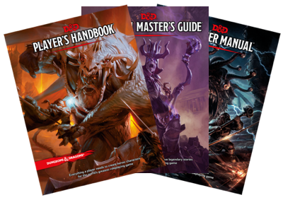

| 使用言語 | 日本語 あるいは 英語が話せる人（両方話せる人も） |
|---|---|
| 頻度 | 1～2回／月 |
| 曜日・時間 | メンバーの希望に合わせて調整 |
| スペース | キャンベルを中心にサウスベイで検討中 |
| オーガナイザー | イギリス人夫（DM）と日本人妻（プレイヤー） |
1974年に制作・販売され あらゆるロールプレイングゲーム（RPG）の礎石となった、世界で最初のテーブルトークRPG。今なおゲームの世界に影響を与え続けているゲームです。
私はRPGというとコンピューターゲームが思い浮かぶ世代なのですが、D＆Dではルールブックと紙、ペン、サイコロなどのアナログのツールを使って、会話を通してゲームを進めていきます。
ゲームは、ダンジョン・マスター（ＤＭ）とプレイヤーに分かれて行われます。
DMがゲームの世界設定、大まかなストーリー・場面設定を準備し、プレイヤーはキャラクターを作り上げDMの世界に入って、自分自身の推理、判断、行動によって、物語を紡いでいきます。
世界観をDMが作り上げるものの、プレイヤーの行動次第で物語は思いもよらない展開になることも。子供には子供の、大人には大人の、それぞれの個性と裁量で物語をどんな方向にも広げていくことができます。
私はプレイヤー経験のみですが、自由でありながら、運に左右される世界が楽しいと思っています。キャラクターを作成するところから、自分で選び作り上げる自由がありながら、肝心な時にサイコロを振らなければならなくなる。賽の目に左右される、“運”がプレイヤーを、そしてDMを翻弄していきます。
翻訳を毎回いれるって、まどろっこしくない？ぼーっとただ待つ時間が多くて退屈では？
こんな疑問をお持ちの方もいるかもしれません。
これまで、バイリンガルのD＆Dの経験が2度ありますが 想像するほど大変ではありません。
もちろん、一つの言語で行う時のストーリーの回転の速さには追いつけませんが、D＆Dにつきものなルールブックのチェックにかかるような手間や時間があるだけです。
それぞれのキャラクターはもともと話せる言語に幅があり、理解できる言語とできない言語があるように、私たち自身もそうした経験をすることになり、シーンによっては深みも増します。
少し時間がかかったり、自分がわからない状況が短時間あっても、日本語、英語を織り交ぜて、いろんな人とやってみたい！と思う方は 楽しめると思います。
さぁ、あなたも、自由で翻弄される冒険の世界へ踏み出してみませんか？
お問い合わせはdnd@dpwright.comへご連絡ください。
公式情報はこちらです。